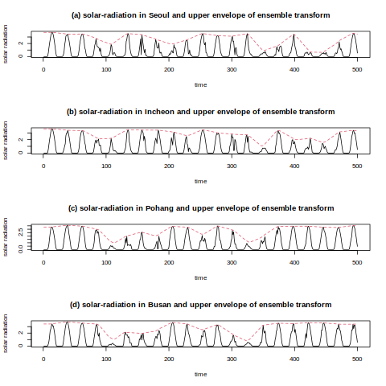
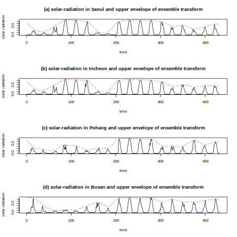
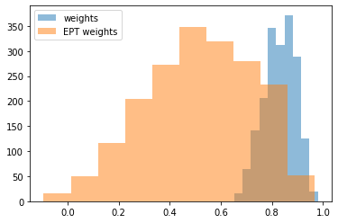

재수정 (2023/05/23) Feature 만들 때 실수가 있었음..ㅠㅠ
import
solar_radiation
Weight
The rpy2.ipython extension is already loaded. To reload it, use:
%reload_ext rpy2.ipython region solar_radiation date
0 북춘천 0 2022-06-01-00:00
1 북춘천 0 2022-06-01-01:00
2 북춘천 0 2022-06-01-02:00
3 북춘천 0 2022-06-01-03:00
4 북춘천 0 2022-06-01-04:00
5 북춘천 0 2022-06-01-05:00 region solar_radiation date
0 북춘천 0 2022-08-16-00:00
1 북춘천 0 2022-08-16-01:00
2 북춘천 0 2022-08-16-02:00
3 북춘천 0 2022-08-16-03:00
4 북춘천 0 2022-08-16-04:00
5 북춘천 0 2022-08-16-05:00EPT Weight
region solar_radiation date
0 북춘천 0 2022-06-01 00:00:00
1 북춘천 0 2022-06-01 01:00:00
2 북춘천 0 2022-06-01 02:00:00
3 북춘천 0 2022-06-01 03:00:00
4 북춘천 0 2022-06-01 04:00:00
5 북춘천 0 2022-06-01 05:00:00Plot
%%R
for (i in 1:44){
assign(paste0('test_data',1:44)[i],test |> filter(region == unique(test$region)[i]))
assign(paste0('test_data',1:44)[i],eval(parse(text=paste0('test_data',i)))[order(eval(parse(text=paste0('test_data',i)))$date),])
assign(paste0('test_y',1:44)[i], eval(parse(text=paste0('test_data',i)))$solar_radiation)
}EPT 수행
eptransf(tindex = NULL, signal, type = "rectangle", tau,
process = c("average", "average"), pquantile = c(0, 1), equantile = c(0, 1),
gamma = 1, boundary = "symmetric") yU저장
시각화
Solar-radiation in Seoul, Incheon, Pohang, Busan
%%R
# windows(width=3, height=3)
par(mfrow=c(4,1))
plot(eval(parse(text=paste0('y',8)))[1:500], type='l', ann=FALSE)
lines(yU[1:500,8],col = 2, lty=2)
# title(main = as.character(unique(train$region)[8]), xlab='time', ylab='solar radiation')
title(main = '(a) solar-radiation in Seoul and upper envelope of ensemble transform', xlab='time', ylab='solar radiation')
plot(eval(parse(text=paste0('y',9)))[1:500], type='l', ann=FALSE)
lines(yU[1:500,9],col = 2, lty=2)
# title(main = as.character(unique(train$region)[18]), xlab='time', ylab='solar radiation')
title(main = '(b) solar-radiation in Incheon and upper envelope of ensemble transform', xlab='time', ylab='solar radiation')
plot(eval(parse(text=paste0('y',18)))[1:500], type='l', ann=FALSE)
lines(yU[1:500,18],col = 2, lty=2)
# title(main = as.character(unique(train$region)[18]), xlab='time', ylab='solar radiation')
title(main = '(c) solar-radiation in Pohang and upper envelope of ensemble transform', xlab='time', ylab='solar radiation')
plot(eval(parse(text=paste0('y',23)))[1:500], type='l', ann=FALSE)
lines(yU[1:500,23],col = 2, lty=2)
# title(main = as.character(unique(train$region)[23]), xlab='time', ylab='solar radiation')
title(main = '(d) solar-radiation in Busan and upper envelope of ensemble transform', xlab='time', ylab='solar radiation')
Solar-radiation in Seoul, Incheon, Pohang, Busan (effect)
%%R
# windows(width=3, height=3)
# png(file = "./plot/ept_plot.png") # The directory you want to save the file in
# # width = 4, # The width of the plot in inches
# # height = 4) # The height of the plot in inches
par(mfrow=c(4,1))
plot(eval(parse(text=paste0('test_y',8)))[312:743], type='l', ann=FALSE)
lines(df_yU_test[312:743,8],col = 2, lty=2)
# title(main = as.character(unique(train$region)[8]), xlab='time', ylab='solar radiation')
title(main = '(a) solar-radiation in Seoul and upper envelope of ensemble transform', xlab='time', ylab='solar radiation')
plot(eval(parse(text=paste0('test_y',9)))[312:743], type='l', ann=FALSE)
lines(df_yU_test[312:743,9],col = 2, lty=2)
# title(main = as.character(unique(train$region)[9]), xlab='time', ylab='solar radiation')
title(main = '(b) solar-radiation in Incheon and upper envelope of ensemble transform', xlab='time', ylab='solar radiation')
plot(eval(parse(text=paste0('test_y',18)))[312:743], type='l', ann=FALSE)
lines(df_yU_test[312:743,18],col = 2, lty=2)
# title(main = as.character(unique(train$region)[18]), xlab='time', ylab='solar radiation')
title(main = '(c) solar-radiation in Pohang and upper envelope of ensemble transform', xlab='time', ylab='solar radiation')
plot(eval(parse(text=paste0('test_y',23)))[312:743], type='l', ann=FALSE)
lines(df_yU_test[312:743,23],col = 2, lty=2)
# title(main = as.character(unique(train$region)[23]), xlab='time', ylab='solar radiation')
title(main = '(d) solar-radiation in Busan and upper envelope of ensemble transform', xlab='time', ylab='solar radiation')
# dev.off()
- 2022-08-28 ~ 2022-09-16
- 8월 31일 9월 4일
힌남노 : 2022년 제11호 태풍으로, 8월 28일 발생하여 9월 6일에 온대저기압으로 변질되어 소멸되었다.
yU Correlation
yU1 yU2 yU3 yU4 yU5 yU6 yU7 yU8 yU9 yU10 yU11
1 3.4188 3.3796 3.7984 3.2444 3.8588 3.6364 3.594 3.7128 3.606 3.6568 3.6588
2 3.4188 3.3796 3.7984 3.2444 3.8588 3.6364 3.594 3.7128 3.606 3.6568 3.6588
3 3.4188 3.3796 3.7984 3.2444 3.8588 3.6364 3.594 3.7128 3.606 3.6568 3.6588
4 3.4188 3.3796 3.7984 3.2444 3.8588 3.6364 3.594 3.7128 3.606 3.6568 3.6588
5 3.4188 3.3796 3.7984 3.2444 3.8588 3.6364 3.594 3.7128 3.606 3.6568 3.6588
6 3.4188 3.3796 3.7984 3.2444 3.8588 3.6364 3.594 3.7128 3.606 3.6568 3.6588
yU12 yU13 yU14 yU15 yU16 yU17 yU18 yU19 yU20 yU21 yU22
1 3.5424 3.6172 3.7636 3.5844 3.598 3.6256 3.328 3.3792 3.4756 3.4088 3.668
2 3.5424 3.6172 3.7636 3.5844 3.598 3.6256 3.328 3.3792 3.4756 3.4088 3.668
3 3.5424 3.6172 3.7636 3.5844 3.598 3.6256 3.328 3.3792 3.4756 3.4088 3.668
4 3.5424 3.6172 3.7636 3.5844 3.598 3.6256 3.328 3.3792 3.4756 3.4088 3.668
5 3.5424 3.6172 3.7636 3.5844 3.598 3.6256 3.328 3.3792 3.4756 3.4088 3.668
6 3.5424 3.6172 3.7636 3.5844 3.598 3.6256 3.328 3.3792 3.4756 3.4088 3.668
yU23 yU24 yU25 yU26 yU27 yU28 yU29 yU30 yU31 yU32 yU33
1 3.408 3.5208 3.19 0 3.7828 3.6932 3.5848 3.4576 3.4376 3.6844 3.7384
2 3.408 3.5208 3.19 0 3.7828 3.6932 3.5848 3.4576 3.4376 3.6844 3.7384
3 3.408 3.5208 3.19 0 3.7828 3.6932 3.5848 3.4576 3.4376 3.6844 3.7384
4 3.408 3.5208 3.19 0 3.7828 3.6932 3.5848 3.4576 3.4376 3.6844 3.7384
5 3.408 3.5208 3.19 0 3.7828 3.6932 3.5848 3.4576 3.4376 3.6844 3.7384
6 3.408 3.5208 3.19 0 3.7828 3.6932 3.5848 3.4576 3.4376 3.6844 3.7384
yU34 yU35 yU36 yU37 yU38 yU39 yU40 yU41 yU42 yU43 yU44
1 3.4764 3.6776 3.312 3.3864 3.5816 3.6788 3.39 3.6984 3.15 3.6456 3.3132
2 3.4764 3.6776 3.312 3.3864 3.5816 3.6788 3.39 3.6984 3.15 3.6456 3.3132
3 3.4764 3.6776 3.312 3.3864 3.5816 3.6788 3.39 3.6984 3.15 3.6456 3.3132
4 3.4764 3.6776 3.312 3.3864 3.5816 3.6788 3.39 3.6984 3.15 3.6456 3.3132
5 3.4764 3.6776 3.312 3.3864 3.5816 3.6788 3.39 3.6984 3.15 3.6456 3.3132
6 3.4764 3.6776 3.312 3.3864 3.5816 3.6788 3.39 3.6984 3.15 3.6456 3.3132Comparison of Correlation 4 region
%%R
before_trans_ = num_vars[c('서울','인천','포항','부산')]
colnames(before_trans_) <- c('Seoul','Incheon','Pohang','Busan')
before_cor = cor(before_trans_)
round(before_cor,4) Seoul Incheon Pohang Busan
Seoul 1.0000 0.9076 0.7043 0.7267
Incheon 0.9076 1.0000 0.7505 0.7779
Pohang 0.7043 0.7505 1.0000 0.8707
Busan 0.7267 0.7779 0.8707 1.0000%%R
# after_trans = df_yU[c('yU8', 'yU9','yU18','yU23')] # 서울, 인천, 포항, 부산
colnames(after_trans) <- c('Seoul','Incheon','Pohang','Busan')
after_cor = cor(after_trans)
round(after_cor,4) Seoul Incheon Pohang Busan
Seoul 1.0000 0.8593 0.1218 0.2073
Incheon 0.8593 1.0000 0.2795 0.3771
Pohang 0.1218 0.2795 1.0000 0.5440
Busan 0.2073 0.3771 0.5440 1.0000Create STGCN Datset
import
STGCN Ver1
| date | 북춘천 | 철원 | 대관령 | 춘천 | 백령도 | 북강릉 | 강릉 | 서울 | 인천 | ... | 순창군 | 북창원 | 양산시 | 보성군 | 강진군 | 의령군 | 함양군 | 광양시 | 청송군 | 경주시 | |
|---|---|---|---|---|---|---|---|---|---|---|---|---|---|---|---|---|---|---|---|---|---|
| 0 | 2022-06-01 00:00:00 | 0.0 | 0.0 | 0.0 | 0.0 | 0.0 | 0.0 | 0.0 | 0.0 | 0.0 | ... | 0.0 | 0.0 | 0.0 | 0.0 | 0.0 | 0.0 | 0.0 | 0.0 | 0.0 | 0.0 |
| 1 | 2022-06-01 01:00:00 | 0.0 | 0.0 | 0.0 | 0.0 | 0.0 | 0.0 | 0.0 | 0.0 | 0.0 | ... | 0.0 | 0.0 | 0.0 | 0.0 | 0.0 | 0.0 | 0.0 | 0.0 | 0.0 | 0.0 |
| 2 | 2022-06-01 02:00:00 | 0.0 | 0.0 | 0.0 | 0.0 | 0.0 | 0.0 | 0.0 | 0.0 | 0.0 | ... | 0.0 | 0.0 | 0.0 | 0.0 | 0.0 | 0.0 | 0.0 | 0.0 | 0.0 | 0.0 |
| 3 | 2022-06-01 03:00:00 | 0.0 | 0.0 | 0.0 | 0.0 | 0.0 | 0.0 | 0.0 | 0.0 | 0.0 | ... | 0.0 | 0.0 | 0.0 | 0.0 | 0.0 | 0.0 | 0.0 | 0.0 | 0.0 | 0.0 |
| 4 | 2022-06-01 04:00:00 | 0.0 | 0.0 | 0.0 | 0.0 | 0.0 | 0.0 | 0.0 | 0.0 | 0.0 | ... | 0.0 | 0.0 | 0.0 | 0.0 | 0.0 | 0.0 | 0.0 | 0.0 | 0.0 | 0.0 |
5 rows × 45 columns
node_list =(df2.columns).tolist()
node_ids = {node : i for i, node in enumerate(node_list)}
node_ids{'북춘천': 0,
'철원': 1,
'대관령': 2,
'춘천': 3,
'백령도': 4,
'북강릉': 5,
'강릉': 6,
'서울': 7,
'인천': 8,
'원주': 9,
'울릉도': 10,
'수원': 11,
'서산': 12,
'청주': 13,
'대전': 14,
'추풍령': 15,
'안동': 16,
'포항': 17,
'대구': 18,
'전주': 19,
'창원': 20,
'광주': 21,
'부산': 22,
'목포': 23,
'여수': 24,
'흑산도': 25,
'고창': 26,
'홍성': 27,
'제주': 28,
'고산': 29,
'진주': 30,
'고창군': 31,
'영광군': 32,
'김해시': 33,
'순창군': 34,
'북창원': 35,
'양산시': 36,
'보성군': 37,
'강진군': 38,
'의령군': 39,
'함양군': 40,
'광양시': 41,
'청송군': 42,
'경주시': 43}- weights, edges, node_ids, FX
STGCN Ver2 (++ edit)
[0.907759100668583,
0.741068831832639,
0.968835370647473,
0.504767766362897,
0.544524976746219,
0.527829574702507,
0.803172492443386,
0.781489079941053,
0.712366118080602,
0.409662421310778]No weights
Comparision
plt.hist(np.array(weights), alpha = 0.5, label = 'weights')
plt.hist(np.array(ept_weights), alpha = 0.5, label = 'EPT weights')
plt.legend(loc='upper left')<matplotlib.legend.Legend at 0x7fcda76bb730>
- 모듈 수정